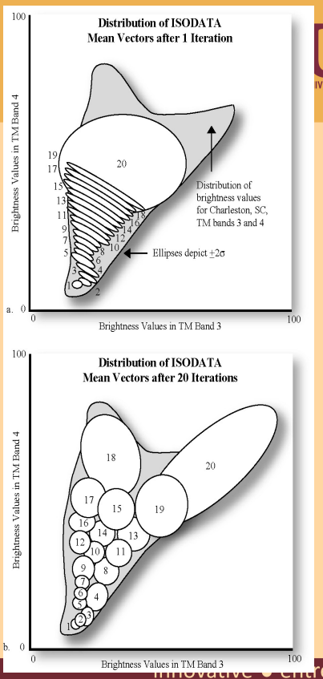
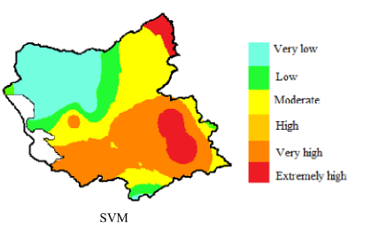

6 week_06 - Classification
6.1 Summary
In this week we learn about Classification, this week topic is related to module CASA0006 Data Science for Spatial System. As we know remote sensing collect imagery satellite data, but what we can do to identify information in the imagery data? how to identify what happening in the image? What is land use and land cover of the given image? is it forest are or urban are?
We can identify the information using Image classification methods. The image classifiation is done computationally. If we see an imagery data we can identify or classify the object within the image by judging based on our experience or called Inductive Learning. Using that idea, now we train the computer system to have human knowledge to solve problem called Machine Learning. We can train computer system to learn on how to identifying satellite imagery data using classification methods.
in Statistic, classification ideas is basically assigning our data into certain categories. Image Classification is basically turn every pixel on the image into one categorical classification. for example our pixel can be identified as forest or residential, high or low level forest combustion and so on. There are 2 types of image classification which are Supervised and unsupervised. Image classification has been being used since 1970. It was started with unsupervised in 1970s, to supervised classification in 1975s and now mostly we have been using Object-Based Image Analysis since 1995s. But what is supervised and unsupervised classification? Check this table for general idea of those 2 classification. But I will tell further in the explanation later.
| Unsupervised | Supervised |
|---|---|
| We give certain data. After that we ask for certain mount of classes and the computer (machine) will return with that amount of classes we asked | we give training dataset and the model. After that we ask to classify the rest of the data or image |
| No labelled data | Some training data has been labelled |
Now, we will discuss one by one.
6.1.1 Unsupervised Learning
Unsupervised Learning is using machine to analyse or cluster our data. So what usually will happen is we give our data, then we ask it to be cluster the dat into certain number of cluster. The machine will return with cluster of data ask we requested. In the context of imagery satellite data, the given data is value of band for each pixel.
Unsupervised learning usually refered to clustering/k-means. In clustering, we have spectral feature space by plotting 2 or more bands value against each other. If we only have 2 bands values, the pixel value will be plotted in 2 dimension feature space. As we add more band value, the dimension will be added as well. After we give our data, we have to set some rules to tell the machine how the data should be clustered. The machine then will start random center point of cluster with radius that has been set. Pixels value within same radius are in the same cluster. machine will start moving it’s center point until all pixels has been alocated to a cluster.
Detail steps of clustering: 1. Give data 2. Then set series of rules, such as: - the radius in spectral feature to define where new cluster started - spectral distance measure - number of pixels to be considered before merging - max number of cluster 3. It will repeat until no pixel alocated again

source: citation Evolutionary Computation Theory for Remote Sensing Image Clustering: A Survey
Other methods of unsuervised learning is ISODATA. This methods is specifically for earth observation data. This methods is similar to K-means clustering but with some additional rules, which are: - Any clusters have so few pixels = meaningless - Clusters are so close they can be merged - Clusters can be split - elongated clusters in feature space
Although learning using ISODATA is beneficial because it’s sepcifically used for EO data, this methods has a drawback which is can create a lots of clusters and difficult to assign meaning. For example it can cause two types of landcover in a pixel. To tackle this drawbacks we can do Cluster busting which is basically mask cluster that incorrect and label to new one.

6.1.2 Supervised Learning
Different from unsupervised learning, supervised learning uses labelled training data. Training data is dataset that being used to train the model, so the model can classify the data for us. Other than training data, we have testing data. Testing data is dataset that being used to assess our model. Training and testing data has to be mutually exclusive.
Generally steps of supervised learning are: 1. Class Definition 2. Pre-processing 3. Training 4. Pixel Assignment 5. Accuracy assignment
Methods on supervised learning are categorized into 2: 1. Parametric - parametric use data that are normally distributed - Methods in parametric: - Maximum likelihood 1. Non-parametric - Non-parametric use data that are not normally distributed - Methods in parametric: - Density slicing - Parallelpiped - Minimum distance to mean - Nearest neighbor - Neural networks - Machine learning / expert systems* (eg. Support Vector Machine, Neural Networks)
It is quiet rare to have normally distributed data in earth observation image. Moreover, recently most works uses machine learning/expert systems or spectral mixture analysis.
6.1.3 Be Aware
Even though, image classifiction will be done by machine, as researcher or the one who assign the machine we have to be aware of several things:
6.1.3.1 Hard Classification or Fuzzy Classification?
First we have to be aware, are we going to do hard classification or fuzzy classification. Hard classification means there will be a define catergory like water or land in our image. Fuzzy classification means we have to classify into fuzzy continuous value.

6.1.3.2 How’s the pixel content?
second, we have to be careful whether we are going to see sub pixel value, whole general pixel value, or some pixel value. It is important te be a concern because it’s quiet rare to have a completely homogenous pixel. Sometimes we have to find the majority value of the pixel.

source: Fisher (1997)
6.1.3.3 Pixel or Object?
Last, we have to consider are we going to look at pixel or object on the image data. Example of pixel are shon in image on the left, while example of object shown on the right image. It is important because our data observation will be different between pixel or object.

source: Superpixels supercells
It is important to define this constraint before we do classificatio because we are the one who will select the propriate methods and ask the machine.
After considering those constrain we should select the propriate methods for our classification. Working with machine, make us temped to work with complicated model. However, not every condition are required complicated methods. Complicated methods might have higher accuracy but it will be harder to interprate. I present this illustration to show the trade off between accuracy and interpretability.

Please choose classification methods wisely.
6.2 Application
6.2.1 Natural Disaster Vulnerability map using Support Vector Machine (SVM)
6.2.1.1 Flood
Natural disaster can cause devastating impact on economy, social, and environment. Flood is one of the most destructive disaster that happen frequently in some areas in the world. It force local community and government to manage the disaster and be resilience towards it. Therefore, recognizing flood-prone areas is essential initial step in planning flood management and resilience strategy. Flood is a dynamic and complex disaster that is caused by a lot of factors. To assessing flood vlunerable area, we have to put many things into account such as, rainfall data, land cover, topography, and so on. One of supervised learning’s benefit is effective in high dimension (1.4. Support Vector Machines, no date). Youssef (2023) used this advantage to assess flood phenomena in Taif in Saudi Arabia. The study showed combination 13 parameters, including remote sensing data, and Support Vector Machine (SVM), can make a vulnerability maps like shown in the image below.

This vulnerability map can be used by policy maker to pointed action plan to prevent and mitigate flooding. Different class in this vulnerabiliity map guides planner to understand which area are highly effected by flood.
Other than SVM, this study has tried to use bivariate and multivariate methods. Apparently, SVM model performed best with 96.2% accuracy. Earlier, Mojaddadi (2017) made flood vulnerability map using SVM as well for Damansara, Malaysia. The result also indicates high classification accuracy with 84.07%. Although in the summary SVM were shown has low interpretability, this study show that using the right data and combination of methods we can get high accuracy and easy to understand result.
6.2.1.2 Drought
not only for flood, supervised classification also had been used to assess other natural disaster. Ghasempour (2022) made Drought vulnerability maps northwest part of Iran. The study used SVM on 17 geo-environmental parameters including temperature and soil condition which are not included by Mojaddadi (2017) and Youssef (2023) in their researches.

source: Youssef(2022) Drought Vulnerability Map of Northwest Iran
6.3 Reflection
- Image classification help us to identify information on imagery satellite data. It can be beneficial to learn about image classification because it can handle multiple parameter or data.
- Although applications of image classification are really benefiicial, there are some drawbacks on pixel-based classification. Per pixel classification does not consider similar pixel that located close ot each other. Moreover, it’s difficult to find homogeneous pixel, but in image classification, pixel value tend to be generalise
- There are a lot of different methods on supervised and unsupervised image classification. We have to be really careful to choose the analysis methods because working with machine tempts to go with more complex model or methods. It might be true that more complex our models is, the higher accuracy we get. However, there is trade off between accuracy and interpretability, althought in the application we find that high accuracy model can also be easily understood. The takeaways is we have to aware of what kind of classification we are going to do, how is the pixel we are going to assess, and are we going to classify object or pixel. Please choos appropriate methods for your analysis.